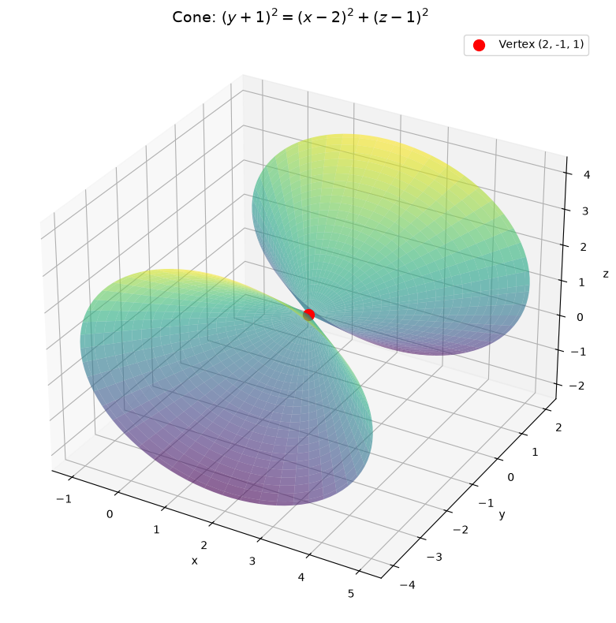
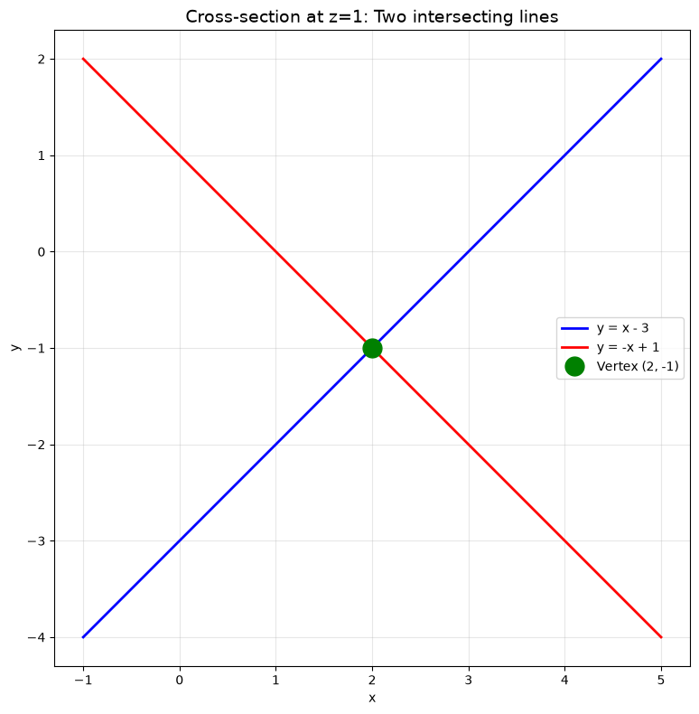
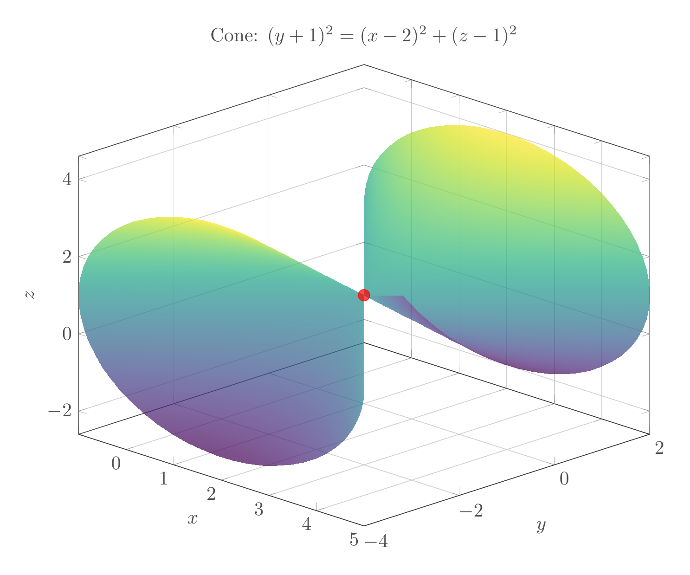
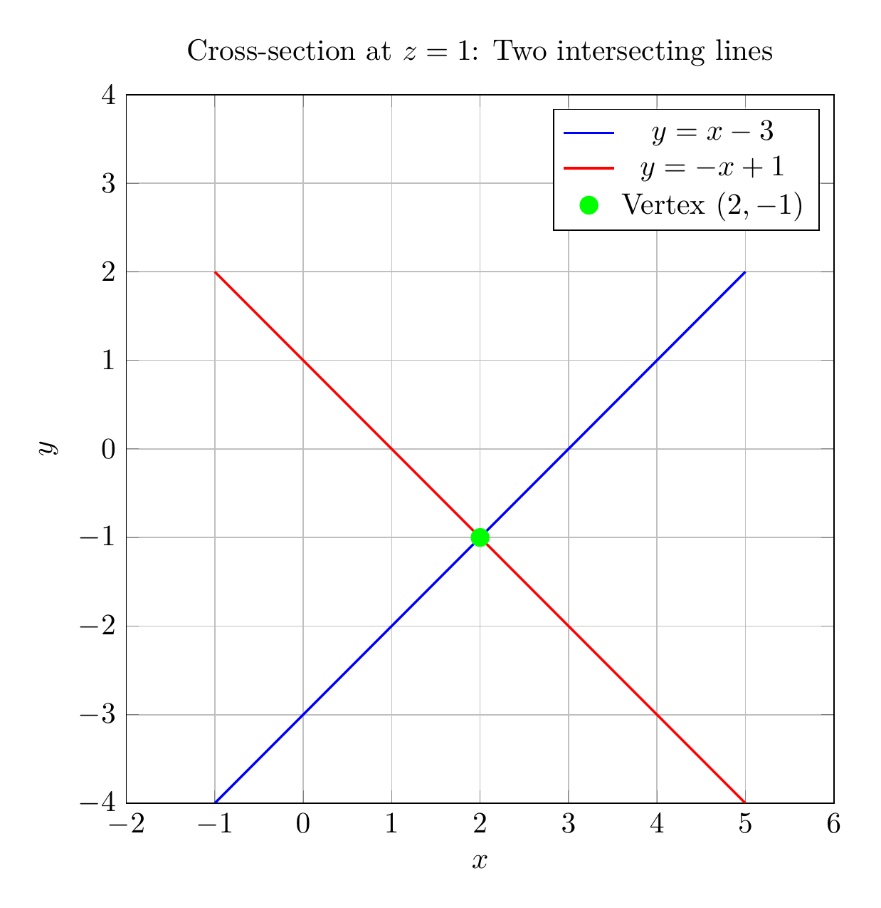

Path: mcma-Qwen3.5-397B-A17B/calculus-12.6.35/chat_20260823_213412_932473_utc_0800
Problem
Please solve the math problem in the image.

End of problem
Answer
# Solution: Reducing the Equation to Standard Form
## Step 1: Complete the Square
Given equation:
$$x^2 - y^2 + z^2 - 4x - 2y - 2z + 4 = 0$$
Group terms by variable:
$$(x^2 - 4x) - (y^2 + 2y) + (z^2 - 2z) + 4 = 0$$
Complete the square for each variable:
**For $x$:**
$$x^2 - 4x = (x-2)^2 - 4$$
**For $y$:**
$$-(y^2 + 2y) = -[(y+1)^2 - 1] = -(y+1)^2 + 1$$
**For $z$:**
$$z^2 - 2z = (z-1)^2 - 1$$
Substitute back:
$$(x-2)^2 - 4 - (y+1)^2 + 1 + (z-1)^2 - 1 + 4 = 0$$
Simplify:
$$(x-2)^2 - (y+1)^2 + (z-1)^2 = 0$$
## Step 2: Standard Form
Rearrange to get the standard form:
$$(y+1)^2 = (x-2)^2 + (z-1)^2$$
## Step 3: Classification
This is the standard equation of a **cone** with:
- **Vertex**: $(2, -1, 1)$
- **Axis**: Along the $y$-direction (parallel to the $y$-axis)
- **Opening**: The cone opens in both positive and negative $y$-directions from the vertex
The general form of a cone with vertex at $(h, k, l)$ and axis along the $y$-direction is:
$$(y-k)^2 = (x-h)^2 + (z-l)^2$$
## Step 4: Geometric Interpretation
- Cross-sections perpendicular to the $y$-axis (constant $y$) are circles
- Cross-sections containing the axis (e.g., at $z=1$) are pairs of intersecting lines
- The cone has a "double-napped" structure with two parts meeting at the vertex
## Final Answer
$$\boxed{\text{Standard form: } (y+1)^2 = (x-2)^2 + (z-1)^2, \quad \text{Surface: Cone with vertex at } (2, -1, 1)}$$
---


\documentclass[border=10pt]{standalone}
\usepackage{pgfplots}
\pgfplotsset{compat=1.18}
\usepgfplotslibrary{colormaps}
\begin{document}
\begin{tikzpicture}
\begin{axis}[
width=12cm,
height=10cm,
xlabel=$x$,
ylabel=$y$,
zlabel=$z$,
title={Cone: $(y+1)^2 = (x-2)^2 + (z-1)^2$},
view={45}{25},
grid=major,
colormap/viridis,
shader=interp,
opacity=0.7,
]
% Upper cone
\addplot3[
surf,
domain=0:3,
y domain=0:360,
samples=30,
samples y=60,
]
({2 + x*cos(y)}, {-1 + x}, {1 + x*sin(y)});
% Lower cone
\addplot3[
surf,
domain=0:3,
y domain=0:360,
samples=30,
samples y=60,
]
({2 + x*cos(y)}, {-1 - x}, {1 + x*sin(y)});
% Vertex point
\addplot3[
only marks,
mark=*,
mark size=3pt,
red,
] coordinates {(2, -1, 1)};
\end{axis}
\end{tikzpicture}
\end{document}

\documentclass[border=10pt]{standalone}
\usepackage{pgfplots}
\pgfplotsset{compat=1.18}
\begin{document}
\begin{tikzpicture}
\begin{axis}[
width=10cm,
height=10cm,
xlabel=$x$,
ylabel=$y$,
title={Cross-section at $z=1$: Two intersecting lines},
axis equal,
grid=major,
xmin=-1, xmax=5,
ymin=-4, ymax=4,
]
% Line y = x - 3
\addplot[
blue,
domain=-1:5,
thick,
] {x - 3};
\addlegendentry{$y = x - 3$}
% Line y = -x + 1
\addplot[
red,
domain=-1:5,
thick,
] {-x + 1};
\addlegendentry{$y = -x + 1$}
% Vertex point
\addplot[
only marks,
mark=*,
mark size=3pt,
green,
] coordinates {(2, -1)};
\addlegendentry{Vertex $(2, -1)$}
\end{axis}
\end{tikzpicture}
\end{document}

End of answer